Saisie du travail réel¶
Feuille de temps¶
Cet écran est dédié à la saisie du travail réel.
La ressource complète son travail chaque jour, pour chaque tâche affectée.
La saisie des données pour une ressource se fait sur une base hebdomadaire.
Le coût correspondant au travail réel est automatiquement mis à jour sur l’affectation, l’activité et le projet.
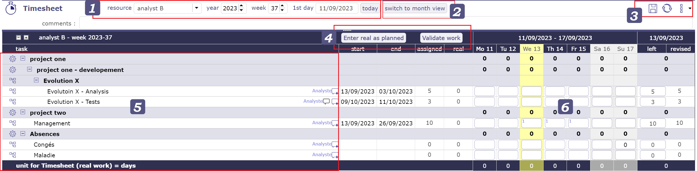
Écran de la zone de feuille de temps¶
Sélection et filtres¶
Ce filtre permet de sélectionner une feuille de temps pour une ressource et pour une période.
Sélection de la ressource
Par défaut, les utilisateurs ne peuvent se sélectionner eux-mêmes qu’en tant que ressource.
L’accès à la feuille de temps des autres ressources dépend de Accès spécifiques.
Période de sélection
Par défaut, la période est déterminée en fonction du jour actuel.
Les périodes ciblées sont affichées à différents endroits de l’écran.
Vous pouvez sélectionner le numéro de la semaine et son année directement avec les filtres correspondants.
Le filtre « premier jour » vous permet de choisir une date spécifique, jour, mois et année. La semaine complète contenant cette date sera affichée.
Le bouton aujourd’hui cible la semaine en cours
Le jour J est mis en évidence.
Changer l’affichage¶
Par défaut, l’affichage de la feuille de temps est présenté par semaine.
En cliquant sur le bouton « passer en vue mensuelle », l’affichage de la feuille de temps passe en vue mensuelle.
Les dates de début et de fin d’un élément ne sont plus affichées dans ce mode.
Outils¶
Cliquez sur
 pour enregistrer les données de la feuille de temps.
pour enregistrer les données de la feuille de temps.Cliquez sur
 pour actualiser les données.
pour actualiser les données.Cliquez sur
 pour afficher les options.
pour afficher les options.
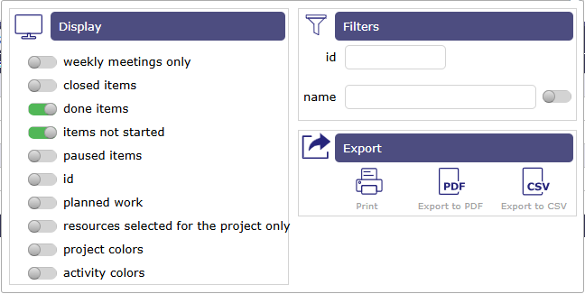
Options de la feuille de temps¶
Affichage¶
Les boutons bascule vous aident à filtrer les informations visibles sur votre feuille de temps.
Faites basculer le bouton vers la droite (bouton vert) pour activer l’affichage.
Réunions hebdomadaires uniquement
Les réunions récurrentes affichent toutes les réunions avec une réunion par ligne. Selon la période et la fréquence de vos réunions récurrentes, de nombreuses lignes peuvent être affichées.
Avec cette option, vous n’affichez que les réunions pour la semaine affichée à l’écran.
Éléments fermés
Faites basculer le bouton pour afficher les tâches fermées. Tâches archivées.
Éléments terminés
Faites basculer le bouton pour afficher les tâches terminées. Avec le reste à faire à 0.
Éléments non démarrés
Faites basculer le bouton pour afficher les tâches non démarrées. L’état macro en cours doit être activé et enregistré pour les tâches pour cette option.
Éléments suspendus
Faites basculer le bouton pour afficher les tâches qui ont été suspendues. L’état macro pause doit être activé et enregistré pour les tâches pour cette option.
ID
Afficher l’ID pour identifier toutes les tâches individuelles.
Travail planifié
Le travail planifié est indiqué sur chaque cellule de saisie, dans le coin supérieur gauche, en bleu clair.
Vous permet d’afficher le temps de travail planifié par jour pour la ressource affectée à la tâche.
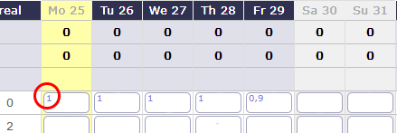
Travail planifié¶
Ressource sélectionnée pour le projet uniquement
Vous pouvez limiter l’affichage de la liste déroulante sélection de ressource.
Si vous avez sélectionné un projet dans votre sélecteur de projet, vous ne verrez que les ressources affectées à ce projet.
Couleur des projets et couleur des activités
Possibilité d’afficher les couleurs du projet et/ou de l’activité directement sur la feuille de temps.
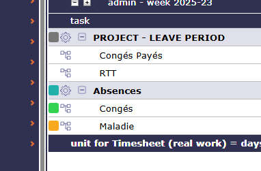
Travail planifié¶
Filtre¶
Les filtres rapides sont utilisés pour définir la liste des tâches affichées par nom et ID.
Exporter¶
Cliquez sur
 pour imprimer la feuille de temps.
pour imprimer la feuille de temps.Cliquez sur
 pour exporter la feuille de temps au format PDF.
pour exporter la feuille de temps au format PDF.Cliquez sur
 pour exporter la feuille de temps au format CSV.
pour exporter la feuille de temps au format CSV.
Validation de saisie¶
Saisir le réel comme planifié
Le travail planifié sur une activité pour une ressource est reporté pour chaque jour.
Si aucun chiffre n’est affiché, cela signifie que la ressource n’est pas censée être informée du travail réel sur cette activité pendant cette période.
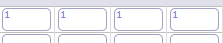
Travail planifié pour la ressource¶
Même si du travail planifié est prévu pour une ressource, rien ne l’oblige à accomplir son travail comme prévu.
L’option Afficher le travail planifié doit être activée.
Répartir le travail
Vous avez la possibilité de réduire la granularité de votre activité en distribuant le travail effectué sur celle-ci en « différents postes ».
De cette façon, vous pouvez rapporter avec précision quelle tâche vous avez effectuée.
Il est nécessaire d’activer l’accès spécifique Activation de la décomposition des affectations
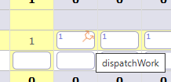
Travail réparti pour l’activité¶
Cliquez sur  pour répartir le travail sur une ligne de votre activité.
pour répartir le travail sur une ligne de votre activité.
Dans la fenêtre contextuelle, saisissez le nom de votre poste, s’il existe, il sera disponible dans la liste déroulante.
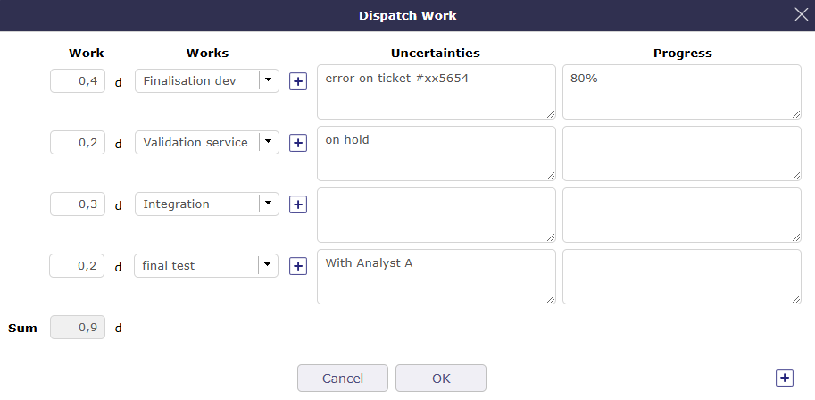
Fenêtre contextuelle de répartition du travail¶
Si aucun poste n’a encore été saisi, cliquez sur  pour ajouter un poste.
pour ajouter un poste.
Saisissez le temps que vous avez passé sur ce poste.
Les champs Incertitudes et avancement ne sont pas obligatoires et peuvent être laissés vides.
Valider.
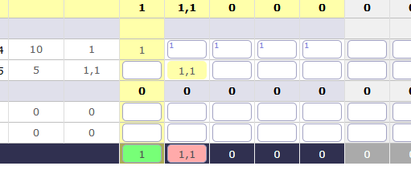
Résultat de la répartition du travail¶
La quantité de travail est automatiquement calculée.
Aucune restriction n’est faite même si vous avez du travail planifié sur une autre activité.
Comme toute ligne de la feuille de temps, vous pouvez dépasser l’ETP de la ressource si les paramètres vous le permettent.
Pour visualiser la répartition du travail, cliquez sur .
Vous pouvez éditer et modifier cette liste.
Pour voir tout le « travail » sur vos activités, le rapport Liste des travaux pour une activité est disponible.
Soumettre le travail
ProjeQtOr propose un système de validation des charges qui permet de suivre les informations du travail réel des ressources par un manager hiérarchique.
Après l’envoi du travail réel, vous ne pouvez plus modifier le temps de travail réel pour la semaine.
Vous devez annuler la demande de validation pour effectuer une modification.
Valider le travail
Les chefs de projet peuvent valider le travail ou tout autre profil personnalisé autorisé à le faire.
Seules les personnes disposant des autorisations nécessaires peuvent voir ce bouton
Lorsque le travail est validé, la ressource ne peut plus modifier son travail sur cette semaine. De même, l’annulation de la validation ne sera plus disponible.
Le système de validation est optionnel et peut donc être masqué.
Zone de tâches¶
La liste affiche les tâches affectées à la ressource sélectionnée dans la liste.
Vous verrez les activités planifiées pour la ressource, les réunions, les tickets, les sessions de planning poker, les sessions de test, affichés avec un niveau projet.
Cliquez sur le nom de l’élément pour accéder à l’écran de détails de l’élément.
Les tâches affectées avec du travail réel sont toujours affichées, même lorsqu’elles sont fermées.
La fonction de la ressource sur cette tâche est affichée à la fin de la ligne.
Note
Une ressource peut avoir plusieurs fonctions.
Il est possible d”affecter la même ressource plusieurs fois mais avec des fonctions différentes pour surveiller les coûts du projet.
L’icône
 vous permet d’ajouter un commentaire.
vous permet d’ajouter un commentaire.L’icône
 indique qu’il y a un commentaire sur la tâche affectée.
indique qu’il y a un commentaire sur la tâche affectée.Déplacez simplement la souris sur l’icône pour voir le dernier commentaire avec sa date et l’heure de sa création.
Cliquez pour voir tous les commentaires
Un commentaire global peut être ajouté sur le suivi hebdomadaire.
Les colonnes Début et Fin affichent les dates planifiées pour chaque activité.
charges sur les tickets¶
Le ticket est le seul élément qui n’apparaît pas sous le projet, même s’il est créé au sein d’un projet, sauf s’il est lié à une Planification de l’Activité.
Cela s’explique par le fait que le ticket est considéré comme une tâche non affectée à réaliser. Il n’est donc pas consolidé avec les éléments planifiés.
Lorsque le ticket n’est pas lié à une activité de planification, il est listé sous
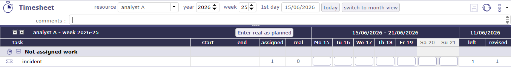
Travail non affecté avec ticket¶
Une fois le ticket lié à une activité de planification, elle-même renseignée avec une affectation et une charge,
le ticket sera affiché sous le nom de l’activité de planification sous le projet correct et à la date d’échéance pour la ressource sélectionnée.
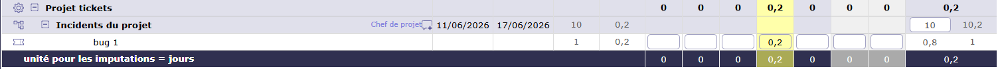
Ticket affecté à une activité de planification¶
Champ de saisie¶
Afin de voir et connaître les affectations sur une tâche, plusieurs colonnes indiquent les périodes affectées à une ressource
Affecté
C’est le travail affecté à la ressource qui est calculé par le logiciel.
Travail réel
C’est le travail effectivement réalisé et déclaré par la ressource.
Reste à faire
C’est le travail que la ressource doit encore fournir pour cette tâche
Le reste à faire est automatiquement diminué lors de la saisie du travail réel.
Les ressources peuvent ajuster cette valeur pour estimer le travail nécessaire pour terminer la tâche.
Réévalué
C’est le travail requis pour terminer la tâche. C’est le travail réel + le reste à faire. Voir : « progress-section-date-duration »
Vous ne pouvez pas modifier le Travail affecté, le Travail réel et le Réévalué directement dans les colonnes.
Ces informations sont calculées directement par le logiciel sur la base de ce que vous avez saisi
Saisie du travail réel
Zone de saisie du travail réel. Il est possible de saisir du travail réel les jours de congé.
Les colonnes de jours de congé sont affichées en gris.
Les jours de congé sont définis dans la définition du calendrier de la ressource.
Total des jours
Sur la dernière ligne se trouve la somme de tous les jours de la semaine.
C’est une synthèse affichée pour chaque projet et globalement pour toute la semaine.
La capacité de la ressource est définie par le nombre d’heures par jour et la capacité de la ressource (ETP).

Zone Total du jour¶
Le total du jour est vert si les saisies sont complètement dans la capacité ETP de la ressource
Le total du jour est rouge clair si les saisies sont supérieures à la capacité ETP de la ressource.
Le total du jour est rouge foncé si les saisies sont supérieures au travail journalier maximum autorisé sur la ressource.
Un message vous avertit que vous dépassez le quota fixe autorisé.
Vous ne pourrez pas enregistrer la feuille de temps avec un quota plus élevé.
Le total du jour est sans couleur si les saisies sont inférieures à la capacité ETP de la ressource.
Le total du jour est orange si les saisies ne sont pas enregistrées.
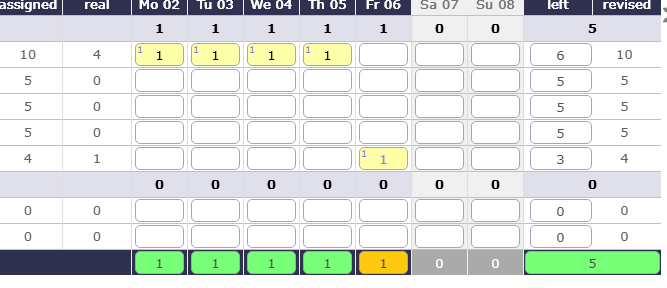
Total du jour avec Planification manuelle¶
Voir aussi
-
Permet de définir l’unité de temps pour le travail réel et la charge de travail et le nombre de jours travaillés par semaine. Le nombre d’heures par jour est défini ici.
-
Vous pouvez définir de nombreux leviers, alertes ou options d’affichage
Génération d’alertes si le travail réel n’est pas saisi
Vous pouvez déclencher des alertes sur la saisie du travail réel pour différents collaborateurs. Ces messages peuvent être envoyés à une fréquence définie par e-mail ou affichés comme une alerte directement dans l’application.
Alimentation automatique du réel
Vous pouvez remplir automatiquement le travail réel à partir du travail planifié jusqu’à une date donnée, puis déclencher le calcul automatique des projets à partir du lendemain de cette date.
Le statut des tâches¶
Le statut de la tâche peut être modifié automatiquement en fonction des saisies sur le travail réel et le reste à faire.
Passer au premier statut en cours : si la valeur du paramètre est définie sur « Oui », lorsque du travail réel est saisi sur une tâche, son statut sera automatiquement modifié au premier statut « En cours ».
Passer au premier statut terminé : si la valeur du paramètre est définie sur « Oui », lorsque le reste à faire est mis à zéro sur une tâche, son statut sera automatiquement modifié au premier statut « terminé ».
Validation du changement de statut
Une icône sera affichée sur la tâche si un changement de statut est applicable.
En raison du travail réel saisi, le statut de la tâche sera modifié au premier statut « En cours ».
Le travail réel est saisi, mais le statut de la tâche ne changera pas en raison d’un problème.
En raison du reste à faire à zéro, le statut de la tâche sera modifié au premier statut « terminé ».
 Plus de reste à faire, mais le statut de la tâche ne changera pas en raison d’un problème.
Plus de reste à faire, mais le statut de la tâche ne changera pas en raison d’un problème.
Avertissement
Si un responsable ou un résultat sont définis comme obligatoires dans la définition du type d’élément pour la tâche. Il est impossible de définir ces valeurs par l’écran de saisie du travail réel.
Le changement de statut doit être effectué dans la section traitement de l’écran de définition de la tâche.
Gestion du réservoir de ressources¶
Lorsque l’option afficher les réservoirs sur la feuille de temps est activée, lorsqu’une ressource est affectée à une activité en même temps qu’un réservoir de ressources dont elle fait partie, elle verra la ligne pour elle-même et la ligne pour le réservoir de ressources.
Lorsque l’option est désactivée, la ressource ne voit que sa ligne.
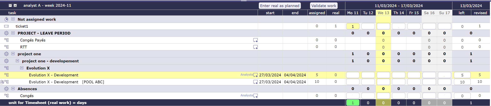
Feuille de temps avec les lignes de ressource et de réservoir de ressources¶
Lorsque l’option est définie sur non, vous pouvez choisir d’afficher au moins le reste à faire sur celle-ci.
L’option suivante afficher le réservoir pour mettre à jour leur reste à faire vous permet d’afficher une ligne pour le réservoir sous la ligne de ressource pour modifier le reste à faire.
une icône apparaît alors à la fin de la ligne de ressource pour le réservoir.
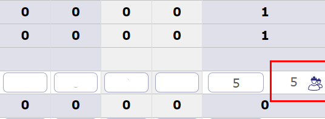
icône réservoir de ressources pour le reste à faire¶
Cliquez dessus et une ligne est disponible pour modifier le reste à faire pour le réservoir de ressources.
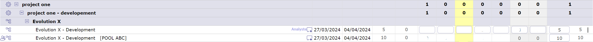
ligne de réservoir de ressource¶
Validation de la feuille de temps¶
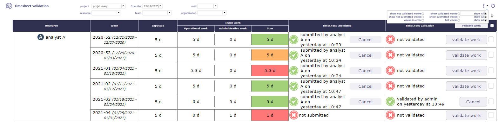
Validation de la feuille de temps¶
L’écran de validation de la feuille de temps permet au chef de projet de recevoir, vérifier et valider le temps alloué hebdomadairement par les ressources à une activité pour tous les projets.
Sélection et filtres¶
Vous pouvez filtrer l’affichage de cet écran par ressource, par équipe et par période.
La visibilité des ressources dans la liste est définie selon vos droits définis par votre profil.
Vous pouvez augmenter la restriction d’affichage avec la possibilité de n’afficher que certaines des demandes de validation.
Code couleur¶
Selon le travail accompli par la ressource, et selon la charge de travail attendue pour cette ressource.
Le chef de projet reçoit la feuille de temps avec un code couleur précis.
Vert : Le travail accompli est le même que celui attendu.
Rouge : La charge de travail renseignée est plus courte ou plus longue. Elle ne correspond pas au travail attendu.
Orange : le travail n’est pas le même que le travail attendu mais la charge est la même.
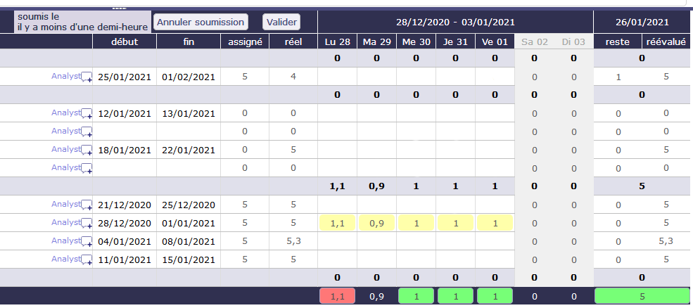
Exemple de charges complétées qui génèrent le code couleur orange¶
Validation¶
Dans la colonne Feuille de temps soumise, vous voyez la date et l’heure auxquelles la ressource a envoyé la soumission.
Dans la colonne Validation de la feuille de temps, vous avez la possibilité de valider le travail ou d’annuler la soumission pour que la ressource puisse corriger son travail.
Consolidation mensuelle¶
La consolidation mensuelle vous permet de visualiser, contrôler et valider les allocations de ressources à un projet particulier pour un mois entier. Cet écran listera tous les projets sur lesquels l’utilisateur a une visibilité.

Écran de consolidation mensuelle¶
Les filtres limiteront la liste :
Projet pour restreindre les projets listés à ce projet et ses sous-projets
Type de projet pour restreindre les projets listés aux projets de ce type
Organisation pour restreindre les projets listés aux projets de cette organisation
Mois et année pour restreindre à cette date
Note
Par défaut, ce sera le dernier mois pour lequel les projets sont encore bloqués, ou à défaut ce sera le mois en cours.
Cet écran affichera pour chaque projet non validé :
Le CA actuellement connu
La charge validée actuellement connue
La charge réelle totale actuellement connue du projet
La charge réelle consommée sur le projet pour le mois sélectionné
Le reste à faire actuellement connu
La charge réévaluée actuellement connue
La marge actuellement connue (charge) = charge validée - charge réévaluée
Pour les projets validés, les données affichées sont celles stockées lors de la validation.
Bloquer un projet sur un mois
Les boutons  et
et  vous permettent de bloquer ou débloquer les charges au-delà de la date de fin de mois. Lorsque le projet est bloqué pour un mois donné, vous ne pouvez pas saisir de charge pour le mois suivant, même s’il a commencé. Le blocage sera propagé récursivement aux sous-projets.
vous permettent de bloquer ou débloquer les charges au-delà de la date de fin de mois. Lorsque le projet est bloqué pour un mois donné, vous ne pouvez pas saisir de charge pour le mois suivant, même s’il a commencé. Le blocage sera propagé récursivement aux sous-projets.
Valider un projet sur un mois
Les boutons  et
et  vous permettent de bloquer ou débloquer les charges au-delà de la date de fin de mois. Lorsque le projet est bloqué pour un mois donné, vous ne pouvez pas saisir de charge pour le mois suivant, même s’il a commencé. Le blocage sera propagé récursivement aux sous-projets.
vous permettent de bloquer ou débloquer les charges au-delà de la date de fin de mois. Lorsque le projet est bloqué pour un mois donné, vous ne pouvez pas saisir de charge pour le mois suivant, même s’il a commencé. Le blocage sera propagé récursivement aux sous-projets.
Avertissement
L’accès au bouton de blocage / déblocage et au bouton de validation sera configuré par un droit spécifique.
Absences¶
Les absences doivent être déclarées le plus tôt possible afin que le calcul de votre planning de projet tienne compte de l’indisponibilité des ressources.
ProjeQtOr propose deux types d’enregistrements de travail non productif :
Un système simple, celui des absences, lié à un projet administratif qui permettra d’enregistrer du travail réel à l’avenir.
un système complexe, celui des ressources humaines, lié à un système de contrats et de droits acquis au fil du temps.
Les absences sont liées à un projet de type administratif.
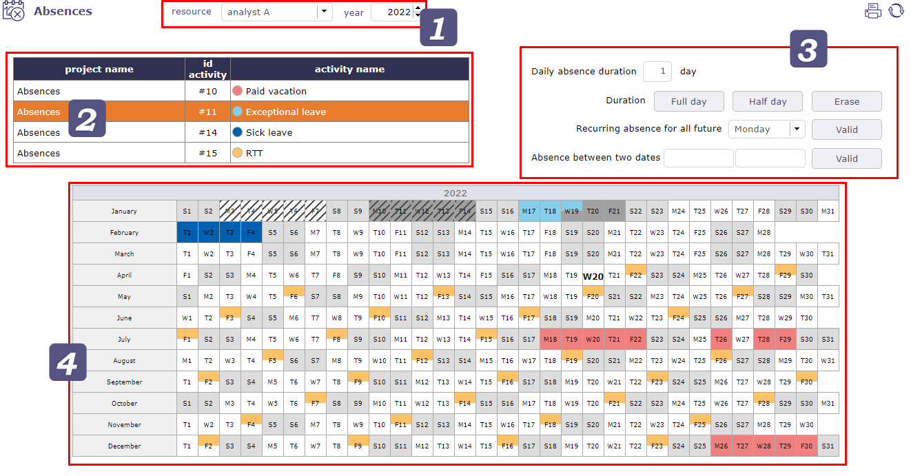
écran des absences¶
Un seul projet est nécessaire pour toutes les ressources, sans qu’elles soient allouées à ce projet.
Sélecteur de ressource
Selon vos droits et votre profil, vous pouvez avoir accès aux ressources que vous gérez ou uniquement à vous-même.
Sélectionnez la ressource dont vous souhaitez ajouter les jours non productifs ainsi que l’année sur laquelle ces jours seront conservés.
Types d’absences
Chaque type d’absence est une activité liée au projet administratif.
Vous pouvez créer autant d’activités que de types d’absences.
vous devez d’abord sélectionner une activité pour pouvoir cliquer sur les jours du calendrier.
Accélérateur
Après avoir sélectionné le type de congé, cliquez sur les accélérateurs pour saisir la valeur sélectionnée directement dans les cases de dates du calendrier.
1 : journée complète
0,5 : demi-journée sur le type de congé sélectionné
0 : supprimer les jours déjà saisis
Vous pouvez combiner une récurrence d’absence pour un jour donné.
Sélectionnez la valeur du jour (0,5, 1) puis sélectionnez un jour dans la liste déroulante.
Les jours correspondants seront marqués absents pour la valeur précédemment sélectionnée à partir de la date actuelle jusqu’à la fin de l’année en cours.
Vous pouvez également sélectionner une période entre deux dates pour appliquer la valeur sélectionnée.
Calendrier
Sélectionnez le type de congé dans la liste existante.
Cliquez sur les cases des dates concernées par le travail non productif ou utilisez les accélérateurs.
Les cases sont remplies avec la couleur du type de congé.
Si vous utilisez le système d’absence des ressources humaines, vous verrez apparaître le projet dédié.

liste des projets et des activités associées sur l’écran des absences¶
Les absences enregistrées via le système de ressources humaines seront toujours affichées sur l’écran des absences.
Autres couleurs
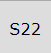
{kind=link}
 indique le travail réel (feuille de temps).
indique le travail réel (feuille de temps).
 indique que la semaine a été soumise/validée.
indique que la semaine a été soumise/validée.
 indique que le travail réel enregistré a été soumis/validé.
indique que le travail réel enregistré a été soumis/validé.